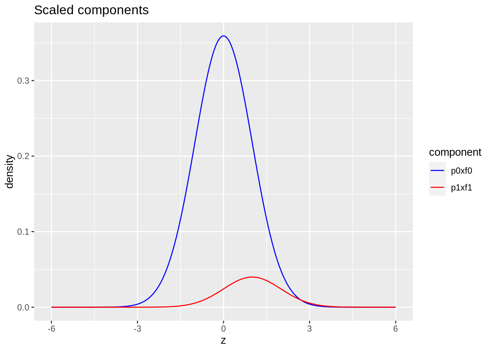
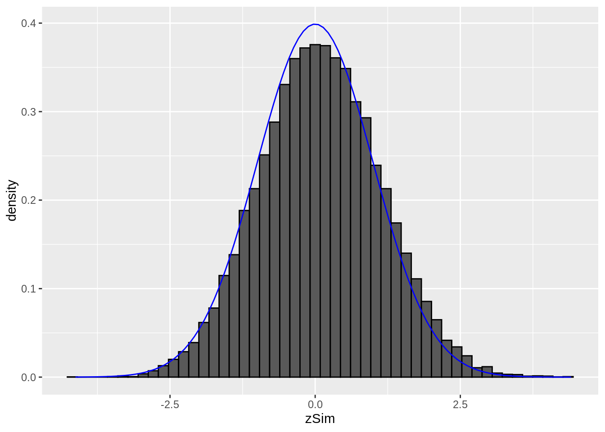
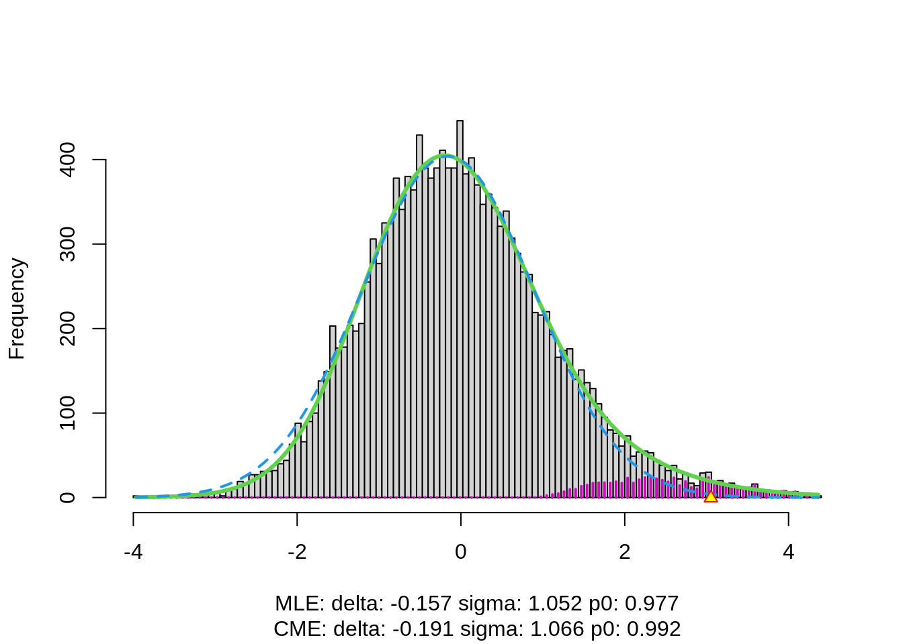

1 Motivation
1.1 Brain imaging study

- Diffusion Tensor Imaging (DTI) data
- DTI measures fluid flows in the brain
- Comparing brain activity of six dyslexic children versus six normal controls
- From each child, DTI produced observations on 15443 voxels (voxel = small volume at a particular (x, y, x) coordinate)
- For each voxel, a two-sided two-sample t-test has been performed, resulting in a z-value (15443 z-values) for fractional anisotropy.
- Low values for FA indicate diffusion in all directions, high values indicates directional diffusion.
- Research question: at what brain locations (voxels) show dyslexic children a different brain activity as compared to children without dyslexia?
For each voxel separately, this is a simple problem, but the large scale of the problem (15443 simultaneous hypothesis tests) causes the problem of multiplicity.
1.1.1 Data Exploration
The dataset dti contains
- Spatial location (x, y, z) of each voxel
- z-statistic for assessing differential brain activity between dyslexic and non-dyslexic children
library(tidyverse)
library(locfdr)
library(gganimate)
dti <- read_csv("https://raw.githubusercontent.com/statOmics/HDA2020/data/dti.csv",
col_types = cols())pZ <- dti %>%
ggplot(
aes(
coord.y,
coord.x,
color=z.value)
) +
geom_point() +
scale_colour_gradient2(low = "blue",mid="white",high="red") +
transition_manual(coord.z) +
labs(title = "transection z = {frame}") +
theme_grey()We will now plot the animated graph
WARNING: The animated graph will only be visible in the HTML output, not in PDF format. If you’re reading the PDF version, check online for the animated graph.
## Warning: No renderer available. Please install the gifski, av, or magick package
## to create animated outputWe visualised the test-statistic of each test per voxel!
Note, that it is difficult to see structure in the data.
1.1.2 Inference
We can convert the z-statistic in a two-sided p-value for each voxel to assess
\[H_0: \text{There is on average no difference in brain activity in voxel xyz between dyslexic and non-dyslexic children}\] \[\mu_d=\mu_{nd}\]
vs
\[H_0: \text{There is on average a difference in brain activity in voxel xyz between dyslexic and non-dyslexic children}\] \[\mu_d\neq\mu_{nd}\]
Below, we calculate the p-values and a variable zP for which we keep the z-value if it is statistical significant at the 5% level otherwise we set it equal to zP=0.
dti <- dti %>%
mutate(
p.value = pnorm(abs(z.value),lower=FALSE)*2,
zP = (p.value < 0.05) * z.value)
pPval <- dti %>%
ggplot(
aes(
coord.y,
coord.x,
color=zP)
) +
geom_point() +
scale_colour_gradient2(low = "blue",mid="white",high="red") +
transition_manual(coord.z) +
labs(title = "transection z = {frame}") +
theme_grey()We will now plot the animated graph
## Warning: No renderer available. Please install the gifski, av, or magick package
## to create animated outputIt is much more easy to observe patterns of activity.
Note, however that
- Higher average FA (z > 0 and p < 0.05) in dyslexic children is appearing in spatial patterns in some locations.
- Lower average FA (z < 0 and p > 0.05) in dyslexic children is scattered throughout the brain.
- Multiple testing problem.
- If there would be no association between brain activity and dyslexia we can expect on average 772.15 false positive voxels.
- Note, that only 1241 were significant at the 5% significance level, so we can expect that the majority of the returned voxels are false positives.
## [1] 772.15## [1] 12411.2 Challenges
Large Scale Inference implies
- Many hypothesis to be evaluated
- Huge multiple testing problem
- Many false positives can be expected if we do not correct for multiple testing
Issue is widespread in many disciplines
- genomics
- transcriptomics
- proteomics
- brain imaging
- high throughput single cell technologies
- detection of anomalous events: e.g. credit card fraud
- evaluation of trading rules
- academic performance of schools
1.3 Multiplicity Problem
Suppose only a single hypothesis test is required for answering the research question. A statistical test controls the probability of making a type I error (type I error rate), \[ \alpha =\text{P}\left[\text{reject }H_0 \mid H_0\right] . \] The type I error is also known as a false positive (i.e. \(H_0\) expresses an negative result, and \(H_1\) a positive result): \(\alpha=\text{P}\left[\text{false positive}\right]\).
An important property:
When \(H_0\) is true, and the assumptions underlying the test hold true, then \[ P \sim U[0,1] . \] Hence, for any \(0<\alpha<1\), \[ \text{P}\left[\text{reject }H_0 \mid H_0\right] = \text{P}\left[P<\alpha \mid H_0\right] = \alpha. \]
The distribution of the z-statistic and the p-values under \(H_0\) are illustrated below:
##
## Attaching package: 'gridExtra'## The following object is masked from 'package:dplyr':
##
## combinesimData <- tibble(
z.value = rnorm(20000)
)
simData <- simData %>% mutate(p.value = 2*(1-pnorm(abs(z.value))))
p1 <- simData %>%
ggplot(aes(x = z.value)) +
geom_histogram(
aes(y=..density..),
color = "black") +
stat_function(fun = dnorm, args=list(mean=0, sd=1))
p2 <- simData %>%
ggplot(aes(x = p.value)) +
geom_histogram(color = "black", breaks = seq(0,1,.05))
grid.arrange(p1, p2, ncol=2)## `stat_bin()` using `bins = 30`. Pick better value with `binwidth`.
We indeed observe that the p-values are uniform under the null hypothesis. So statistical hypothesis testing provides a uniform testing strategy.
1.3.1 Notation
In the multiple testing literature the number of features that for which a test is conducted is denoted by \(m\) instead of \(p\) to avoid confusion with the symbol for a p-value.
1.3.2 Familywise error rate
Suppose that \(m\) hypotheses have to be tested simultaneously for answering a single research question.
Let \(H_{0i}\) denote the \(i\)th null hypothesis (\(i=1,\ldots, m\)) and let \(H_0\) denote the intersection of all these partial null hypotheses.
In this case the type I error rate is no longer relevant. Instead one may consider the Familywise Error Rate (FWER) \[ \text{FWER}=\text{P}\left[\text{reject at least one }H_{0i} \mid H_0\right]. \]
Assuming independence among the \(m\) tests and assuming that all individual tests are performed at the \(\alpha\) level of significance, the FWER can be computed as
\[ \begin{array}{rcl} \text{FWER} &=& \text{P}\left[\text{reject at least one }H_{0i} \mid H_0\right] \\ &=& 1 - \text{P}\left[\text{reject no }H_{0i} \mid H_0\right] \\ &=& 1- \text{P}\left[\text{not reject }H_{01}\text{ and }\ldots\text{ and not reject }H_{0m} \mid H_0\right] \\ &=& 1- \prod_{i=1}^m \text{P}\left[\text{not reject }H_{0i} \mid H_0\right] \\ &=& 1- (1-\alpha)^m . \end{array} \]
Examples:
\(\alpha=0.05\) and \(m=5\): FWER\(=0.23\)
\(\alpha=0.05\) and \(m=100\): FWER\(=0.99\)
\(\alpha=0.05\) and \(m=15443\): FWER\(\approx 1\).
These calculations illustrate the problem of multiplicity: the more tests that are performed, the larger the probability that at least one false positive conclusion is obtained. Thus if all significant results are listed, and suppose that all null hypotheses hold true, then the FWER is the probability that at least one of the listed positive results is a false positive. Sometimes, a list of significant results represent the “discoveries” from the study, and therefore a false positive result is often also referred to as a false discovery.
For example, with \(m=100\) and \(\alpha=0.05\) the chance that at least one of the “discoveries” is false, is about \(99\%\). Even worse, with \(m\approx 15000\) the FWER increases to virtually \(100\%\). In general we also expect that lists of significant results (discoveries) get longer with increasing \(m\).
Many researchers, however, when presented a long list of significant results (or discoveries), would not mind too much if one or a few false discoveries appear in the list. Hence, the FWER is not the most relevant risk measure, as the FWER is allowed to be \(100\%\) in case researchers do not mind to have a few false discoveries among the (perhaps many) positive results in the list of discoveries. A better solution will be given later, but first we continue with the use of FWER.
1.3.3 Invert FWER to significant level for individual test
The identity FWER\(=1- (1-\alpha)^m\) may be inverted to find the significance level at which each individual test should be tested to attain the nominal familywise error rate at FWER, \[ \alpha = 1-(1-\text{FWER})^{1/m} \] so that the simultaneous testing procedure controls the FWER at the desired level (method of Sidàk).
Examples:
FWER\(=0.05\) and \(m=5\): \(\alpha=0.0102\)
FWER\(=0.05\) and \(m=100\): \(\alpha=0.00051\)
FWER\(=0.05\) and \(m=15443\): \(\alpha=0.0000033\).
We will argue that this procedure is too stringent for large \(m\).
To attain the familywise error rate at level FWER the individual hypotheses should be tested at very stringent significance levels when \(m\) is large. The consequence of testing at a small significance level \(\alpha\) is that it is hard to find significant results, and thus the lists of significant results (discoveries) is likely to be short. Controlling the FWER means that the chance is small that these lists contain one or more false positives. A negative consequence, however, is that many of the true positive hypothesis (i.e. \(H_1\) is true) will not appear in these short lists. Hence, the “power” is small (power is not well defined in this multiple testing setting – extensions of the concept are possible). Thus, avoiding false positives by controlling the FWER comes at a price: many of the true positive hypothesis may be missed.
1.3.4 Adjusted p-value
First we give a very general definition of an adjusted \(p\)-value.
Define the adjusted \(p\)-value as \[ \tilde{p}_i = \{\inf \alpha\in[0,1]: \text{ reject }H_{0i} \text{ at FWER } \alpha\} . \] With these adjusted \(p\)-value, the \(i\)th partial null hypothesis may be rejected when \[ \tilde{p}_i < \alpha \] while controlling the FWER at \(\alpha\).
The corrected \(p\)-value should be reported. It accounts for the multiplicity problem and it can be compared directly to the nominal FWER level to make calls at the FWER level.
2 False Discovery Rate
2.1 Introduction
The table shows the results of \(m\) hypothesis tests in a single experiment.
| accept \(H_{0i}\) | reject \(H_{0i}\) | Total | |
|---|---|---|---|
| null | TN | FP | \(m_0\) |
| non-null | FN | TP | \(m_1\) |
| Total | NR | R | m |
- \(TN\): number of true negative: random and unobserved
- \(FP\): number of false positives: random and unobserved
- \(FN\): number of false negatives: random and unobserved
- \(TP\): number of true positives: random and unobserved
- \(NR\): number of acceptances (negative results): random and observed
- \(R\): number of rejections (positive results): random and observed
- \(m_0\) and \(m_1\): fixed and unobserved
- \(m\): fixed and observed
Note that the table is not completely observable. It is introduced to better understand the concept of FWER and to introduce the concept of the false discovery rate (FDR).
| accept \(H_{0i}\) | reject \(H_{0i}\) | Total | |
|---|---|---|---|
| null | TN | FP | \(m_0\) |
| non-null | FN | TP | \(m_1\) |
| Total | NR | R | m |
The FWER can now be reexpressed as \[ \text{FWER}=\text{P}\left[\text{reject at least one }H_{0i} \mid H_0\right] = \text{P}\left[FP>0\right] . \]
The False Discovery Rate (FDR) is defined as \[ \text{FDR} = \text{E}\left[\frac{FP}{R}\right] =\text{E}\left[\text{FDP}\right] \] with \(FP/R=\text{FDP}\) the false discovery proportion and is also referred to as the false positive proportion (FPP).
Before providing more details on how to perform multiple hypothesis testing with control of the FDR, we illustrate the difference between FWER and FDR control.
The examples illustrate the problem when controlling the FWER and they demonstrate the meaning of the FDR as a more realistic risk measure.
The idea is to look at tables as on the previous slide, but from many . In its most restrictive interpretation, repeated experiments refer to replicating the same experiment many times. In the case study (brainscan) this means that each repeated experiment consists of randomly sampling 6 normal and 6 dyslectic children from a population. This is of course more like a thought experiment. The interpretation of the FWER and FDR in terms of repeated experiments, however, relates to relative frequencies and averages over tables (as on the previous slide) resulting from different independent experiments. For examples, suppose that you work for a biotech company, and each week a microarray experiment is performed (each experiment is based on e.g. 20 biological samples and aims at testing differential expression for 10,000 genes) and for each of such experiments you can think of a table as on the previous slide. The FWER and FDR may then also be interpreted as relative frequencies and averages over tables of these experiments. These experiments are not literally “repeated” experiments, but still the FWER and FDR retain their interpretation.
FWER control at \(5\%\). Suppose 100 repeated experiments have been performed. Each experiment consists of \(10,000\) hypothesis tests. Suppose that we know (this is however irrealistic) that \(1,500\) null hypotheses are not true. Below you see a few hypothetical results.
| A. | accept \(H_{0i}\) | reject \(H_{0i}\) | Tot. |
|---|---|---|---|
| true N | \(8499\) | \(1\) | \(8500\) |
| true P | \(1490\) | \(10\) | \(1500\) |
| Total | \(9989\) | \(11\) | \(10000\) |
| B. | accept \(H_{0i}\) | reject \(H_{0i}\) | Tot. |
|---|---|---|---|
| true N | \(8497\) | \(3\) | \(8500\) |
| true P | \(1463\) | \(37\) | \(1500\) |
| Total | \(9960\) | \(40\) | \(10000\) |
| C. | accept \(H_{0i}\) | reject \(H_{0i}\) | Tot. |
|---|---|---|---|
| true N | \(8500\) | \(0\) | \(8500\) |
| true P | \(1498\) | \(2\) | \(1500\) |
| Total | \(9998\) | \(2\) | \(10000\) |
- When controlling the FWER at \(5\%\), results as in the tables A and B are only allowed in \(5\%\) of the experiments.
- The other \(95\%\) of the experiments result in tables similar to C.
Table A gives a list of 11 discoveries, and table B gives 40 discoveries. Both lists of discoveries contain at least 1 false positive.
Table C gives a shorter list with only 2 discoveries which are both true positives.
When controlling the FWER at \(5\%\), tables with no false discoveries (table C) should make up \(95\%\) of all repeated experiments.
Hence, when controlling the FWER at \(5\%\) most experiments will have to result in short lists.
Longer lists imply a larger risk of false positives so that the FWER cannot be controlled at a level as low as \(5\%\).
FDR control at \(5\%\). Suppose 100 repeated experiments have been performed. Each experiment consists of \(10,000\) hypothesis tests. Suppose that we know (this is however irrealistic) that \(1,500\) null hypotheses are not true. Below you see a few hypothetical results.
| A. | accept \(H_{0i}\) | reject \(H_{0i}\) | Tot. |
|---|---|---|---|
| true N | \(8491\) | \(9\) | \(8500\) |
| true P | \(1444\) | \(56\) | \(1500\) |
| Total | \(9935\) | \(65\) | \(10000\) |
| B. | accept \(H_{0i}\) | reject \(H_{0i}\) | Tot. |
|---|---|---|---|
| true N | \(8497\) | \(3\) | \(8500\) |
| true P | \(1412\) | \(88\) | \(1500\) |
| Total | \(9909\) | \(91\) | \(10000\) |
| C. | accept \(H_{0i}\) | reject \(H_{0i}\) | Tot. |
|---|---|---|---|
| true N | \(8500\) | \(0\) | \(8500\) |
| true P | \(1498\) | \(2\) | \(1500\) |
| Total | \(9998\) | \(2\) | \(10000\) |
When controlling the FDR at \(5\%\),
- results as in the tables A and B are very common, but
- results as in table C are rather rare.
- On overage \(FP/R\) is expected to be \(5\%\).
Tables A and B now give lists with 65 and 91 discoveries, respectively. Both lists contain false discoveries: \(9/65=13.8\%\) false discovery proportion for table A and \(3/91=3.3\%\) false discovery proportion for table B. Table C gives a short list with no false discoveries, i.e. \(0\%\) false discoveries proportion. When controlling the FDR at \(5\%\) each list may contain false discoveries, averaged over repeated experiments the false discoveries proportion must be equal to \(5\%\) (definition of false discovery rate). Hence, many tables as tables A and B are allowed. There is thus no need to have many tables as table C.
In summary: controlling the FDR allows for more discoveries (i.e. longer lists with significant results), while the fraction of false discoveries among the significant results in well controlled on average. As a consequence, more of the true positive hypotheses will be detected.
FWER control is too stringent:
Setting 1: BH95 with nominal FDR set at \(10\%\) and \(m_1=500\)
Consider 10 repeated experiments, with the following outcomes for \(TP\) and \(R\)
| \(FP\) | 11 | 14 | 8 | 20 | 12 | 0 | 11 | 10 | 13 | 18 |
|---|---|---|---|---|---|---|---|---|---|---|
| \(R\) | 102 | 110 | 101 | 159 | 88 | 91 | 102 | 140 | 110 | 171 |
Based on these 10 repeated experiments
- FDR = \(\text{E}\left[FP/R\right] \approx 9.8\%\)
- FWER = \(\text{P}\left[FP > 0 \right] \approx 90\%\)
- sensitivity = \(\text{E}\left[TP\right]/m_1=\text{E}\left[R-FP\right]/m_1\approx 21\%\)
Setting 2: Bonferroni with nominal FWER set at \(10\%\) and \(m_1=500\)
Consider 10 repeated experiments, with the following outcomes for \(TP\) and \(R\):
| \(FP\) | 0 | 0 | 3 | 0 | 0 | 0 | 0 | 0 | 0 | 0 |
|---|---|---|---|---|---|---|---|---|---|---|
| \(R\) | 10 | 11 | 10 | 15 | 9 | 9 | 13 | 18 | 9 | 9 |
Based on these 10 repeated experiments
- FDR = \(\text{E}\left[FP/R\right] \approx 3\%\)
- FWER = \(\text{P}\left[FP > 0 \right] \approx 10\%\)
- sensitivity = \(\text{E}\left[TP\right]/m_1=\text{E}\left[R-FP\right]/m_1 \approx 2\%\)
The first setting shows results from simulations in which the FDR is controlled with the BH95 method (see further) at \(10\%\) (which is good). This gives a sensitivity of \(21\%\) (not large, but realistic in large scale genomics studies). The FWER, however, is very large: 90%, but we do not mind, because we do not mind that in a large scale study we find one or more false discoveries (i.e. \(V>0\)), as long as the relative number of false discoveries is on average under control (FDR control).
The second setting shows results from simulations in which the FWER is controlled at 10%. The FDR, on the other hand, is now as small as \(3\%\) and the sensitivity as small as 2%. Hence, hardly any truly DE gene can be discovered, and, also, hardly any false discovery will end up in the conclusions of the data analysis. This analysis with FWER control is too stringent in large scale genomics context.
2.2 The Benjamini and Hochberg (1995) method
Procedure for controlling the FDR at \(\alpha\):
Let \(p_{(1)}\leq \ldots \leq p_{(m)}\) denote the ordered \(p\)-values.
Let \(k=\max\{i: p_{(i)}\leq i \alpha/m\}\), i.e. \(k\) is the largest integer so that \(p_{(k)}\leq k \alpha/m\).
If such a \(k\) exists, reject the \(k\) null hypotheses associated with \(p_{(1)}, \ldots, p_{(k)}\). Otherwise none of the null hypotheses is rejected.
The adjusted \(p\)-value (also known as the \(q\)-value in FDR literature): \[ q_{(i)}=\tilde{p}_{(i)} = \min\left[\min_{j=i,\ldots, m}\left(m p_{(j)}/j\right), 1 \right]. \]
- Benjamini and Hochberg published their method in 1995; it was one of the first FDR control methods.
- The same authors published later yet other FDR control methods.
- For this reason their 1995 method is often referred to as the Benjamini and Hochberg 1995 method, or BH95.
- As input the method only needs the \(p\)-values from the \(m\) hypotheses tests.
- When controlling FDR, the adjusted \(p\)-values are often referred to as \(q\)-values.
Example: \(m=5\) and FDR controlled at \(\alpha=0.05\).
| \(p_{(i)}\) | \(<\) or \(>\) | \(i \alpha/m\) | reject? |
|---|---|---|---|
| 0.001 | \(<\) | \(1\times 0.05/5=0.01\) | yes |
| 0.007 | \(<\) | \(2\times 0.05/5=0.02\) | yes |
| 0.014 | \(<\) | \(3\times 0.05/5=0.03\) | yes |
| 0.031 | \(<\) | \(4\times 0.05/5=0.04\) | yes |
| 0.042 | \(<\) | \(5\times 0.05/5=0.05\) | yes |
Note that the last column can only be filled in after the largest \(k\) is detected!
Example: \(m = 7\) and FDR controlled at \(\alpha = 0.05\).
| \(p_{(i)}\) | \(<\) or \(>\) | \(i \alpha/m\) | reject? |
|---|---|---|---|
| 0.001 | \(<\) | \(1\times 0.05/7=0.007\) | yes |
| 0.007 | \(<\) | \(2\times 0.05/7=0.014\) | yes |
| 0.014 | \(<\) | \(3\times 0.05/7=0.021\) | yes |
| 0.031 | \(<\) | \(4\times 0.05/7=0.029\) | yes |
| 0.035 | \(<\) | \(5\times 0.05/7=0.036\) | yes |
| 0.048 | \(>\) | \(6\times 0.05/7=0.043\) | no |
| 0.052 | \(>\) | \(7\times 0.05/7=0.050\) | no |
2.3 Intuition of BH95?
Consider \(m = 10,000\) tests
We will expect \(0.001 \times m_0\) tests to return false positives. A conservative estimate of the number of false positives that we can expect can be obtained by considering that the null hypotheses are true for all features, \(m_0 = m = 10000\). We then would expect \(0.001 \times 10,000 = 10\) false positives (\(FP=10\)).
Suppose that the researcher found 200 genes with \(p<0.001\) (\(R=200\)).
The proportion of false positive results (FDP = false positive proportion) among the list of \(R=200\) genes can then be estimated as \[ \widehat{\text{FDP}}=\frac{FP}{R}=\frac{10}{200}=\frac{0.001 \times 10000}{200} = 0.05. \]
Recall that the B&H (1995) procedure involves finding the largest integer \(k\) so that \(p_{(k)} \leq k \alpha /m\), or, equivalently, \(p_{(k)} m /k \leq \alpha\).
In this example: \(k=200\), \(p_{(k)}=0.001\), \(m=10,000\) and \(\alpha=0.05\).
2.3.2 Other important considerations
It can be shown that the BH-FDR method weakly controls the FWER, i.e. it controls the FWER if all features are false (\(m_0=m\)).
The BH-FDR is derived under the assumption of independence of the features and has been shown to be only valid under special forms of dependence between the features.
2.4 Brain Example

The graph shows the histogram of the \(m=15443\) \(p\)-values. It shows a distribution which is close to a uniform distribution for the larger p-values, but with more small \(p\)-values than expected under a uniform distribution.
This is a trend that would arise if most of the hypotheses are nulls (resulting in \(p\)-values from a uniform distribution), but some are non-nulls (more likely to result in small \(p\)-values).
dti <- dti %>%
mutate(
padj = p.adjust(p.value, method="fdr"),
zFDR = (padj < 0.05) * z.value)
pPadj <- dti %>%
ggplot(aes(p.value,padj)) +
geom_point() +
geom_segment(x=0,y=0,xend=1,yend=1) +
ylab("adjusted p-value (BH, 1995)")
grid.arrange(pPadj,
pPadj + ylim(c(0,0.05)),
ncol=2)## Warning: Removed 15411 rows containing missing values (geom_point).
##
## FALSE TRUE
## 14202 1241##
## FALSE TRUE
## 15411 32At the 5% FDR, 32 voxels are returned as significantly differentially active between dyslexic and non-dyslexic children.
pFDR <- dti %>%
ggplot(
aes(
coord.y,
coord.x,
color=zFDR)
) +
geom_point() +
scale_colour_gradient2(low = "blue",mid="white",high="red") +
transition_manual(coord.z) +
labs(title = "transection z = {frame}") +
theme_grey()## Warning: No renderer available. Please install the gifski, av, or magick package
## to create animated output3 local fdr
3.1 Introduction
Suppose that the test statistic for testing \(H_{0i}\) is denoted by \(z_i\), and that the test statistics have a \(N(0,1)\) null distribution.
If all \(m\) null hypotheses are true, the histogram of the \(m\) test statistics should approximate the theoretical null distribution (density \(f_0(z)\)).
## `stat_bin()` using `bins = 30`. Pick better value with `binwidth`.
Assuming that the test statistic has a standard normal null distribution is not restrictive. For example, suppose that \(t\)-tests have been applied and that the null distribution is \(t_d\), with \(d\) representing the degrees of freedom. Let \(F_{td}\) denote the distribution function of \(t_d\) and let \(\Phi\) denote the distribution function of the standard normal distribution. If \(T\) denotes the \(t\)-test statistic, then, under the null hypothesis, \[ T \sim t_d \] and hence \[ F_{td}(T) \sim U[0,1] \] and \[ Z = \Phi^{-1}(F_{td}(T)) \sim N(0,1). \] If all \(m\) null hypotheses are true, then each of the \(Z_i\) is \(N(0,1)\) and the set of \(m\) calculated \(z_i\) test statistics may be considered as a sample from \(N(0,1)\). Hence, under these conditions we expect the histogram of the \(m\) \(z_i\)’s to look like the density of the null distribution.
3.2 Two group model
Suppose that under the alternative hypothesis the test statistic has density function \(f_1(z)\).
We use the term “null” to refer to a case \(i\) for which \(H_{0i}\) is true, and “non-null” for a case \(i\) for which \(H_{0i}\) is not true.
Consider the prior probabilities \[ \pi_0 = \text{P}\left[\text{null}\right] \text{ and } \pi_1=\text{P}\left[\text{non-null}\right] = 1-\pi_0. \]
The marginal distribution of the \(m\) test statistics is then given by the mixture distribution
\[ f(z) = \pi_0 f_0(z) + \pi_1 f_1(z) \]
3.2.1 Examples of mixture distributions
We have already explored mixture distributions in detail in the paper reading session on model based clustering.
- blue: \(f_0\): \(N(0,1)\), red: \(f_1\): \(N(1,1)\)
components <- tibble(z = seq(-6,6,.01)) %>%
mutate(
f0 = dnorm(z),
f1 = dnorm(z, mean = 1))
components %>%
gather(component, density, -z) %>%
ggplot(aes(z,density,color = component)) +
geom_line() +
scale_color_manual(values=c("blue","red"))The graphs shows the two component distributions separately.
- blue: \(\pi_0 \times f_0\) with \(\pi_0=0.9\) and \(f_0 = N(0,1)\)
- red: \(\pi_1\times f_1\) with \(\pi_1=1-\pi_0=0.1\) and \(f_1 = N(1,1)\)
p0 <- 0.9
p1 <- 1-p0
mu1 <- 1
scaledComponents <- tibble(z = seq(-6,6,.01)) %>%
mutate(
p0xf0 = dnorm(z) * p0,
p1xf1 = dnorm(z, mean = mu1)*p1
)
scaledComponents %>%
gather(component, density, -z) %>%
ggplot(aes(z,density,color = component)) +
geom_line() +
scale_color_manual(values=c("blue","red")) +
ggtitle("Scaled components")
Mixture distribution
- blue: \(\pi_0 \times f_0\) with \(\pi_0=0.9\) and \(f_0 = N(0,1)\)
- red: \(\pi_1\times f_1\) with \(\pi_1=1-\pi_0=0.1\) and \(f_1 = N(1,1)\)
- black: \(f=\pi_0 f_0 + \pi_1 f_1\)
scaledComponents %>%
mutate(f=p0xf0+p1xf1) %>%
gather(component, density, -z) %>%
ggplot(aes(z,density,color = component)) +
geom_line() +
scale_color_manual(values=c("black","blue","red")) +
ggtitle("Mixture and scaled components")
Mixture \(\pi_0 f_0(z)+\pi_1 f_1(z)\) with \(\pi_0=0.65\) and \(f_1= N(2,1)\) and \(f_0 = N(0,1)\)
p0 <- 0.65
p1 <- 1-p0
mu1 <- 2
scaledComponents <- tibble(z = seq(-6,6,.01)) %>%
mutate(
p0xf0 = dnorm(z) * p0,
p1xf1 = dnorm(z, mean = mu1)*p1)
scaledComponents %>%
mutate(f=p0xf0+p1xf1) %>%
gather(component, density, -z) %>%
ggplot(aes(z,density,color = component)) +
geom_line() +
scale_color_manual(values=c("black","blue","red")) +
ggtitle("Mixture and scaled components (p0 = 0.35)")3.2.2 simulations
Simulated data: 20000 \(z\)-statistics with \(\pi_1=0.10\) non-nulls with \(f_1=N(1,1)\).
p0 <- .9
p1 <- 1-p0
mu1 <- 1
m <- 20000
zSim <- c(
rnorm(m * p0),
rnorm(m * p1, mean=mu1)
)
zSim %>%
as_tibble %>%
ggplot(aes(x = zSim)) +
geom_histogram(
aes(y=..density..),
color = "black") +
stat_function(fun = dnorm,
args = list(
mean = 0,
sd=1),
color="blue")## `stat_bin()` using `bins = 30`. Pick better value with `binwidth`.
It is hard to see the difference between the histogram and the density function of the null distribution (blue curve), because the mean of \(f_1\) is not much larger than 0 and because only \(\pi_1=10\%\) non-nulls are included and because the alternative is not far from the null distribution. However, this is not an unrealistic setting.
Note, that in most settings the non-null features will originate from a mixture of multiple distributions with positive and negative means. Fortunately, the local fdr method does not require us to estimate \(f_1\) as we will see further.
3.3 local fdr
We can now calculate the probability that a case is a null given the observed \(z\), \[ \text{P}\left[\text{null}\mid z\right] = \frac{\pi_0 f_0(z)}{f(z)} . \] This probability is referred to as the local false discovery rate, and denoted by fdr\((z)\).
If for an observed \(z\), fdr\((z)\) is sufficiently small, one may believe that the case is a true discovery (i.e. \(H_{0i}\) may be rejected).
3.3.1 Link with FDR
Recall the definition of the FDR, \[\begin{eqnarray} \text{FDR} &=& \text{E}\left[FP/R\right] \\ &=& \text{E}\left[\text{number of nulls among rejected} / \text{number of rejected}\right] \\ &=& \text{P}\left[\text{null} \mid \text{rejected}\right] \end{eqnarray}\]
The FDR is to be interpreted as an overall risk: among all rejected hypotheses (discoveries) it gives the expected fraction (or probability) of a null (false discovery).
The local fdr, on the other hand, is to be interpreted as a risk for a specific decision: if a null hypothesis is rejected based on a test statistic value of \(z\), then the local fdr gives the probability of that single discovery being a false discovery.
Since the local fdr has a clear interpretation that applies to an individual hypothesis test, it can be used to decide whether or not to reject a null hypothesis.
In particular, reject a null hypothesis \(H_{0i}\) if fdr\((z)<\alpha\), where \(\alpha\) is the nominal local fdr level at which the multiple testing problem need to be controlled at.
The local fdr method can only be applied if \(\pi_0\) and \(f\) can be estimated from the data (see later). The density \(f_0\) can be either known (null distribution of the test statistic) or it can be estimated from the observed \(m\) test statistics.
For the sake of simplicity, suppose that \(H_{0i}\) is tested against a one-sided alternative and that \(H_{0i}\) is rejected for small \(z\), i.e.
\[H_0: z = 0 \text{ vs } H_1: z < 0\]
Suppose that all \(H_{0i}\) are rejected for which the observed test statistic is at most \(z\), then we can write
\[\begin{eqnarray} \text{FDR}(z) &=& \text{P}\left[\text{null} \mid \text{rejected}\right] \\\\ &=& \text{P}\left[\text{null} \mid Z\leq z\right] \\\\ &=& \text{E}_{Z}\left\{\text{P}\left[\text{null} \mid Z\right] \mid Z\leq z\right\} \\\\ &=& \text{E}_{Z}\left[\text{fdr}(Z) \mid Z\leq z\right] \\\\ &=& \frac{\int_{-\infty}^z \text{fdr}(u) f(u) du}{\int_{-\infty}^z f(u) du} \\\\ &=& \frac{\pi_0\int_{-\infty}^z f_0(u) du}{F(z)} \\\\ &=& \frac{\pi_0 F_0}{F(z)} . \end{eqnarray}\]
This shows that fdr\((z)=\frac{\pi_0 f_0(z)}{f(z)}\) and \(\text{FDR}(z)=\frac{\pi_0 F_0(z)}{F(z)}\) have similar expression. The former is expressed in terms of density functions, and the latter in terms of the corresponding cumulative distribution functions.
From the equality \[ \text{FDR}(z) = \frac{\int_{-\infty}^z \text{fdr}(u) f(u) du}{\int_{-\infty}^z f(u) du} \]
we learn that the probability for a false discovery among hypotheses rejected by using threshold \(z\), equals the average of the local false discovery rates fdr\((u)\) of the discoveries (\(u\leq z\) here).
Note, that the BH-FDR adopts
- \(\pi_0=1\), which is a conservative estimate
- uses the theoretical null for \(p=F_0(z)\)
- uses the empirical cumulative distribution function \(\bar F(z) = \frac{\#Z < z}{m}\) to estimate \(F(z)\).
A similar identity can be easily shown for two-sided tests.
3.3.2 Estimation of fdr\((z)=\frac{\pi_0 f_0(z)}{f(z)}\)
\(f(z)\) can be estimated by nonparametric density estimation methods (\(f(z)\) is the marginal distribution of the test statistics; no knowledge about null / non-null is needed)
\(f_0(z)\) is known or can be estimated from the data
\(\pi_0\) can be estimated once \(f(z)\) and \(f_0(z)\) are estimated for all \(z\).
3.3.3 Brainscan example
In the brainscan example the test statistics are supposed to be \(N(0,1)\) distributed under the null hypothesis. Tests are performed two-sided.
The argument
nulltype=0specifies that the null distribution (\(f_0\)) is \(N(0,1)\).The dashed blue line gives \(f_0\) and the solid green line is the nonparametric estimate of the marginal density function \(f\). The two densities do not coincide and hence we may anticipate that some of the voxels show differential brain activity.
The purple bars indicate the estimated number of non-nulls (among the hypotheses/voxels for a given \(z\)-value). The plots shows that more non-nulls are expected for the negative \(z\)-values than for the positive \(z\)-values (sign of \(z\) corresponds to more or less brain activity in normal versus dyslectic children).
3.3.4 Problems?
Note, however, that
- we typically expect that the majority of the test statistics follow the null distribution.
- that the null distribution in the plot is rescaled
- So, we would expect that the two distributions to overlay in the middle part.
- However, we observe a shift.
In practise it often happens that the theoretical null distribution is not valid.
This can happen due to
- Failed mathematical assumptions: null distribution is incorrect
- Correlation between the samples
- Correlation between the features
- Confounding that is not corrected for.
3.4 Advantage of having a massive parallel data structure
The massive parallel data structure enables us
- to spot deviations from the theoretical null distribution.
- to estimate the null distribution by using all features.
Efron relaxes the local fdr method by assuming that the null distribution is a Normal distribution but with a mean and variance that can be estimated empirically (based on all the features).
This can be done by setting the argument nulltype in the locfdr function equal to nulltype = 1, which is the default or be setting nulltype = 2.
The locfdr method then uses
nulltype = 1maximum likelihood to estimate the null by only considering the middle part in the distribution of the test statistics (MLE) ornulltype = 2a geometric method that places the best fitting normal under the peak of the estimate of f(z). (CME)
3.4.1 Brainscan example

The plot shows that the null distribution is shifted to negative values and has a standard deviation that remains close to 1.
This often happens if there is correlation between the features.
Spatial correlation can be expected in the brain, so voxels that are close to each-other typically will be correlated.
The dashed blue line gives \(f_0\) and the solid green line is the nonparametric estimate of the marginal density function \(f\). The two densities do not coincide and hence we may anticipate that some of the voxels show differential brain activity.
The purple bars indicate the estimated number of non-nulls (among the hypotheses/voxels for a given \(z\)-value). The plots shows that only non-nulls for positive \(z\)-values are expected (sign of \(z\) corresponds to more or less brain activity in normal versus dyslectic children).

The plot at the left is the same as on the previous page.
The plot at the right shows the local fdr as the black solid line. Close to \(z=0\) the fdr is about 1 (i.e. if those hypotheses would be rejected, the probability of a false positive is about \(100\%\)). When moving away from \(z=0\) to larger values the fdr drops.
This means that we can only discover convincingly differential brain activity for large positive \(z\). Rejecting null hypotheses with large negative \(z\) would still be risky: large chance of false discovery.
The reason can be read from the first graph: for negative \(z\) the ratio \(f_0(z)/f(z)\) is almost 1, whereas for large positive \(z\) the ratio \(f_0(z)/f(z)\) becomes small.
Note, that the result is atypically. In most applications we typically pick-up both downregulated (negative z) and upregulated (positive z) features.
dti <- dti %>%
mutate(
lfdr = lfdr$fdr,
zfdr = (lfdr<0.2) * z.value)
pfdr <- dti %>%
ggplot(
aes(
coord.y,
coord.x,
color=zfdr)
) +
geom_point() +
scale_colour_gradient2(low = "blue",mid="white",high="red") +
transition_manual(coord.z) +
labs(title = "transection z = {frame}") +
theme_grey()## Warning: No renderer available. Please install the gifski, av, or magick package
## to create animated outputNote, that the local fdr method allows us to detect differential brain activity in a specific region in the front part of the brain for which a larger fractional anisotropy is observed on average for childeren having dyslexia.
We can also estimate the FDR of the set that we return as the average local fdr in this set.
## [1] 0.10349253.5 Power
The local false discovery rate may also be used to get power diagnostics.
General idea: for \(z\)’s supported by the alternative hypothesis (i.e. large \(f_1(z)\)), we hope to see small fdr\((z)\).
The expected fdr is an appropriate summary measure: \[ \text{Efdr} = \text{E}_{f1}\left[\text{fdr}(Z)\right] = \int_{-\infty}^{+\infty} \text{fdr}(z) f_1(z) dz. \]
With estimates of fdr\((z)\) and \(f_1(z)\), the Efdr can be computed.
A small Efdr is an indication of a powerful study.

With \(\alpha\) the nominal local fdr level, the vertical axis gives \[ \text{E}_{f_1}\left[\text{fdr}(Z)<\alpha\right]. \]
where \(Z\) is the test statistic distributed under the alternative hypothesis (\(f_1\)).
This probability \(\text{P}_{f_1}\left[\text{fdr}(Z)<\alpha\right]\) is a kind of extension of the definition of the power of a test: it is the probability that a non-null can be detected when the nominal local fdr is set at \(\alpha\).
The graph shows, for examples, that with \(\alpha=0.20\) we only have \(\text{P}_{f_1}\left[\text{fdr}(Z)<\alpha\right] =0.24\), i.e. only \(24\%\) of the non-nulls are expected to be discovered.
At the bottom of the graph we read Efdr\(=0.486\). Hence, the local fdr for a typical non-null feature is expected to be 48.6% which is rather large. The study is not well powered!
2.3.1 Comments
Thus, if we knew \(m_0\) (the number of true nulls), we could improve the method by applying it to the level \(\alpha m/m_0\) (cfr. Bonferroni).
\(\longrightarrow\) many FDR methods consist in estimating \(m_0\) or the fraction of null genes \(m_0/m\).
The inequality \[ \text{FDR} \leq \frac{m_0}{m} \alpha \leq \alpha \] shows that BH1995 is a conservative method, i.e. it controls the FDR at the safe side, i.e. when one is prepared to control the FDR at the nominal level \(\alpha\), the BH95 will guarantee that the true FDR is not larger than the nominal level (when the assumptions hold).
More interestingly is that \(\frac{m_0}{m} \alpha\) is in between the true FDR and the nominal FDR. Suppose that \(m_0\) were known and that the BH95 method were applied at the nominal FDR level of \(\alpha=m/m_0 \alpha^*\), in which \(\alpha^*\) is the FDR level we want to control. Then the inequality gives \[ \text{FDR} \leq \frac{m_0}{m} \alpha = \frac{m_0}{m} \frac{m}{m_0}\alpha^* = \alpha^* , \] and hence BH95 would better control the FDR at \(\alpha^*\).
Note that \(\alpha=m/m_0 \alpha^*>\alpha^*\) and hence the results is less conservative than the original BH95 method.
The above reasoning implies a generalized adaptive linear step-up procedure:
The adjusted \(p\)-values (=\(q\)-values) are obtained as \[ \tilde{p}_{(i)} = \frac{\hat{m}_0}{m} \min\left\{\min_{j=i,\ldots, m}\{m p_{(j)}/j\} ,1 \right\}. \]